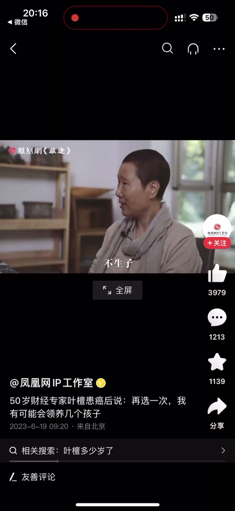
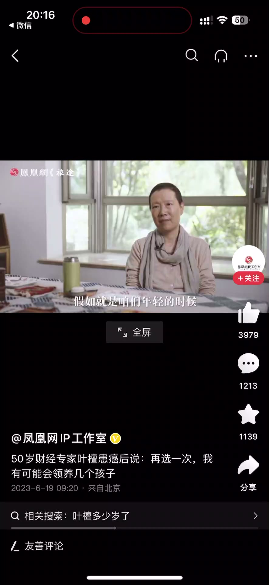
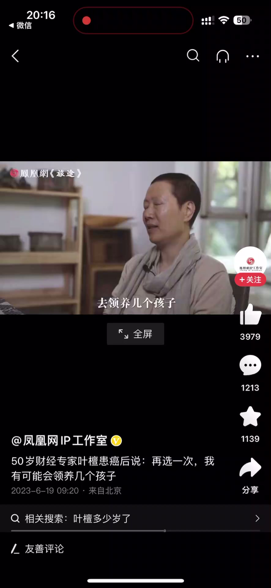
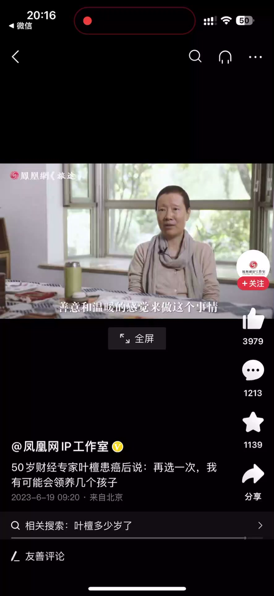

内容要点
一段 34 秒的价值观分享：讲者并不觉得「不生孩子」是一件大事情，但也承认一旦选择不婚不育，身体衰弱时身边会没有至亲陪伴。面对「如果年轻时有再一次选择机会，会不会选择做母亲」的提问，她回答：身体好的话可能会去领养几个孩子——因为并不觉得世界上一定要基因传承，自己的基因也不比别人好到哪去，与其这样，用善意和温暖来做传承不是更好吗。
知识结构
讲者不觉得不生孩子是大事情；但一旦选择不婚不育、尤其是不生子，身体衰弱时身边没有至亲陪伴，这是要面对的现实。
如果年轻时有再一次选择机会，身体好的话可能会去领养几个孩子；不一定要基因传承，自己的基因并不比人家好到哪去，用善意和温暖来做传承更好。
传承的方式不止基因一种：领养孩子、用善意和温暖去滋养他人，同样是让爱延续的选择——不一定要把「生孩子」当成唯一的答案。
00:00-00:18不生子不是大事，但要面对现实
讲者观点：我倒不觉得（不生孩子）是一件大事情。
但她也承认：如果你一旦做出了选择，不结婚不生子、尤其是不生子，当你比较衰弱的时候，身边没有至亲的人陪伴，这是需要面对的现实。


00:19-00:34再选一次：领养与善意的传承
被问到「假如咱们年轻的时候有再一次选择的机会，你会选择做母亲这个身份吗」，她回答：我有可能，身体好的话，去领养几个孩子。
我并不觉得在这个世界上一定要基因传承，我的基因也并不比人家好到哪去。
与其这样的话，用善意和温暖的感觉来做这个事情，那不是更好吗。


完整转录（21段）
以下文本由 Whisper medium 模型自动转录，可能存在少量识别误差，已尽可能修正。
我倒不觉得是一件大事情
还是有孩子比较好
如果你一旦做出了选择
我不结婚不生子
尤其是不生子
当你比较衰弱的时候
身边没有自亲的人陪伴
假如咱们年轻的时候
再有一次选择的机会
你会选择
也是母亲这个身份呢
我有可能身体好的话
去领养几个孩子
这有可能
我并不觉得在这个世界上
一定要基因传承
我的基因也并不比人家好到哪去
与其这样的话
用善意和温暖的感觉
来做这个事情
那不是更好吗